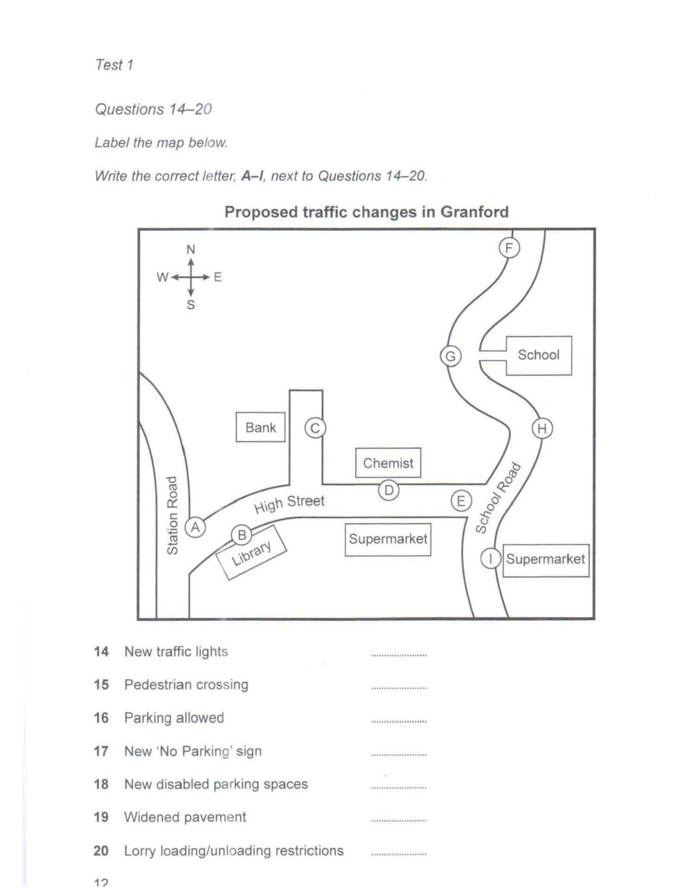

Cambridge IELTS 13
Time: approx. 30 minutes
Instructions
Digital recreation of Cambridge IELTS Listening Test 1.
Type answers in the gaps. Click options for multiple choice.
Print this page for paper-like practice.
Complete the table below. Write ONE WORD AND/OR A NUMBER for each answer.
Complete the table below. Write ONE WORD AND/OR A NUMBER for each answer.
| Cookery Class | Focus | Other Information |
|---|---|---|
The Food Studio |
how to1and cook with seasonal products |
|
Bond's Cookery School |
food that is4 |
• small classes• also offers2classes• clients who return get a3discount• includes recipes to strengthen your5• they have a free6every Thursday |
The7Centre |
mainly8food |
• located near the9• a special course in skills with a10 |
Questions 11–13: Choose A, B or C. Questions 14–20: Label the map A–I.

Questions 21–25: Choose A, B or C. Questions 26–30: Complete the flow-chart A–H.
Complete the notes below. Write ONE WORD ONLY for each answer.
IELTS Listening Test 1 • Cambridge IELTS 13 • Practice recreation (content from official PDF)